햇빛소득마을
강원 9개 시·군 19개 마을, 햇빛소득마을 3차 공모 도전…12월 결과 발표
1·2차 공모에서 도내 46곳 이미 선정…행안부 "3차에서 전국 200곳 이상 마을공동체 지원"

전남광주 햇빛소득마을 126곳 ESS 조건에 주민 초기 부담 커…이재창 시의원 "폐도·제방·철도 주변까지 부지 넓히고 주민 부담 낮춰야"
통합특별시의회 행정사무감사서 도로변 태양광 등 새 부지 발굴 주문…에너지산업본부 "가상발전소 사업자 지정해 마을과 협의"

정부 "조건부 선정 햇빛소득마을도 사업화 지원"…ESS 구축 사업 11월 공고, 1MW 이하 주민참여 태양광 계통 우선접속 12월 말 시행
행안부·기후부·농식품부 설명자료…"523곳 중 즉시 착수 36곳" 지적에 저수지·비축농지·도로 사면 등 유휴 국공유지 제공 계속

햇빛소득마을 선정 436곳 가운데 바로 시작할 수 있는 곳은 23곳…하천구역·한전 계통·'동' 명칭에 발목
정부는 올해 700곳 선정을 목표로 속도…지자체 규제와 전력망 부족으로 현장은 멈춰 있어

순창군, 공유재산 부지에 햇빛소득마을 100곳 만든다…전북개발공사·한전과 공공주도형 발전 협약
2030년까지 5년간 부지 함께 발굴, 개발공사가 투자·건설·운영…12월 조례 제정, 내년 1월 주민설명회

남원 9개 마을 햇빛소득마을 조건부 선정…시의회 연구단체 "이제는 사업화", 부지 발굴·자부담 지원 등 5대 과제 논의
여주 구양리·완주 서봉마을 사례 공유…발전수익으로 무료 점심·행복버스, 70세 이상 월 5만 원 경로연금

전력망 막혀 조건부 선정된 화순 수동마을 1MW 햇빛소득마을, 저장장치로 계통 연결 길 연다…설치·운영비는 민간 통합발전소 사업자가
49가구 주민 모두 동의한 사업…기후에너지환경부 장관 11일 현장 점검, 이번 주 안에 햇빛소득마을 ESS 사업자 공모
신협, 시민 태양광에서 해상풍력·햇빛소득마을까지 재생에너지 금융 넓힌다…마을 발전시설 자금 최대 85% 대출
안산시민햇빛발전협동조합 발전소 60곳 짓는 데 힘 보탠 경험 살려 고창 해상풍력 1,000억 원 연계대출 참여, 에너지공단 이차보전으로 마을 이자 부담 덜어

햇빛소득마을 522곳 중 490곳 '조건부'…국회 예결위서 "착공한 곳 거의 없고 브로커가 주민 밀어낼 수 있다"
2027년 예산안 심사 전체회의, 내년 2,200곳 확대 계획에 예산은 이차보전 285억 원 중심…영농형 태양광 150억 원도 연구·제도 기반에 쏠렸다는 지적

남부발전 재생에너지 민간 제안 창구에 19건 접수…세종 전의·안동 임동·평택 고덕 주민에 햇빛소득마을 컨설팅
7월 연 재생에너지 24시 클리닉 성과 공개, 사업제안 14건·컨설팅 4건·R&D 1건…부산항만공사와 항만부지 재생에너지 공동개발 협약도

익산시, 12월 영농형 태양광 법 시행 앞두고 "햇빛소득마을과 묶어 금융·ESS 지원"
최정호 시장 "설비 면적은 농지의 20% 안팎, 발전 소득이 더 커"…인허가·설치비·계통 연계는 과제로 남아

익산시, 햇빛소득마을 사업구역 '리'에서 '면' 단위로 넓혀 달라 정부에 건의
최정호 시장 "발전소 옆 마을도 함께 혜택 누려야"…하천 사면·폐교·국공유지까지 부지 찾기, 관리기관 협의는 과제

경남 햇빛소득마을 41곳 중 26곳 전력망 연결 막혀…도의회 "변전소 확충 2030년 이후, 주민 소득 언제 나오나"
1·2차 선정 마을 33곳이 조건부…경남도 "전력망 우선 연결·ESS 국비 지원 정부에 건의"

양산 원동면 대리·선리·장선마을, 낙동강수계 기금으로 햇빛소득마을 추진…행안부 공모 신청 남아
낙동강수계관리위 '2027년 재생에너지 특별지원사업' 대상에 포함…설비 대리 360kW·선리 999.45kW·장선 998.46kW, 주민 동의율 90%·72.9%·71%, 내년 지원 예정액 20억2,700만 원


여주 구양리 '마을 전체가 주인' 1MW 태양광…담보 벽은 신협 4억2,000만 원으로 넘었다
법인격 없는 행정리는 사회적협동조합으로 사업…20년간 매달 약 1,000만 원 순수익 구조, 수익은 가구별로 나누지 않고 무료 점심·마을버스에

대전시의회, 햇빛소득마을 공모에 '법정동' 포함 건의안 채택…"리가 아니라 신청조차 못 해"
김미희 의원 대표 발의, 의원 19명 공동 발의…2027년 공모부터 동 지역 참여·평가 기준 정비 요구, 대전시는 4년간 시비 34억 원 '대전형 햇빛소득마을' 구상

여수 최동익 의원 "햇빛소득마을 육성기금 2조 원 조성하자"…시의회 5분 발언서 제안
4년간 매년 5,000억 원, 주민 초기 자기자본·장기저리 융자에 쓰고 상환금은 다른 마을에 재대출

춘천 오탄1리, 협동조합 꾸려 햇빛소득마을 3차 공모 신청…주민 82% 동의, 999.75kW 태양광에 13억1,000만 원
마을규약상 주민 149명 중 123명 동의로 필수 기준 70% 넘겨…같은 사북면 오탄2리는 1차에 조건부 선정, 결과는 12월 말 발표

여수 4개 마을, 햇빛소득마을 3차 공모 신청…2차 조건부 5곳은 부지·주민 참여 절차 밟아, 계통 막힌 곳은 ESS 병행 검토
10월 30일 마감 3차 추가 공모, 관계기관 검토·행안부 평가위원회 심사 거쳐 12월 말 결과 발표…여수시 "행정 지원·맞춤형 컨설팅 제공"

에너지공단, 햇빛소득마을 등록기업 과거 업계약서 이력 확인…업계는 사후 제재로 마을 사업 흔들릴까 반발
언론 취재로는 등록 243곳 중 60여 곳이 대상…공단은 대상 수·발표 시점 안 밝혀, 문제 기업 생기면 다른 등록기업이 마을 사업 이어받도록 지침에 정해

최동익 전남광주통합특별시의원, 통합 재정지원으로 2조 원 햇빛소득마을 육성기금 만들자 제안
5분 자유발언서 매년 5,000억 원씩 4년간 적립해 마을 자기자본·장기저리 융자 지원하고 상환금은 다른 마을에 다시 빌려주는 구조 제시…대출 의존이 주민 소득 깎는다고 지적, 집행부 답변은 아직 없어

햇빛소득마을 추진단 내년 운영경비 4억6,100만 원 새로 편성…1차 선정 87곳 중 실제 추진 가능한 마을은 13곳
조건부 선정 74곳 가운데 59곳(75.6%)은 전력망 미비가 원인…선정 마을 수보다 사업 개시 기간·주민 귀속소득으로 성과를 따져야 한다는 지적

제주 햇빛소득마을 2곳 첫발…제주도, 마을 자부담 15% 가운데 약 70%를 지방소멸대응기금으로 지원 추진
내년 예산에 3억7,000만 원 반영, 2030년까지 10곳가량 목표…애월 용흥리 317.985kW는 보전지구에 막혀 용도 변경 심의 중, 남원읍 마을 495kW는 내년 8월 상업운전 계획, 30일 마감 3차 공모엔 도내 신청 없을 듯
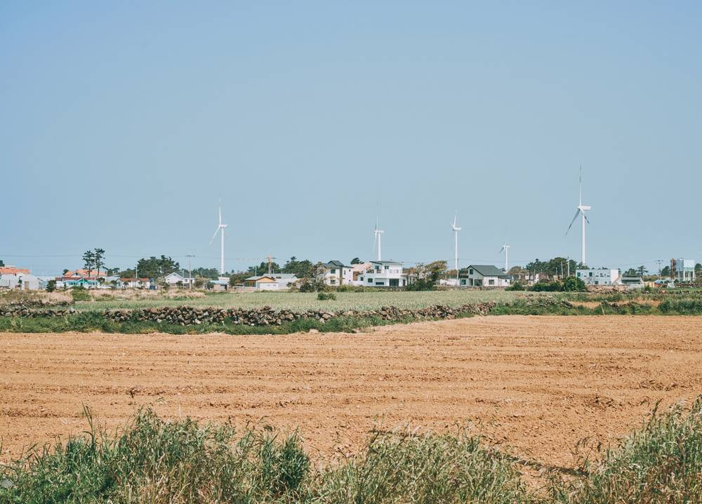
햇빛소득마을 수익, 마을 돌봄·공동급식에…이천시장·구미 대원1리 이장 구상 나와
성수석 이천시장 "주민 협동조합 햇빛소득으로 마을 통합돌봄", 1,000kW 수상형 조건부 선정된 구미 옥성면 대원1리는 "수익 생기면 공동급식"…둘 다 구상 단계, 규모·시기는 안 나와
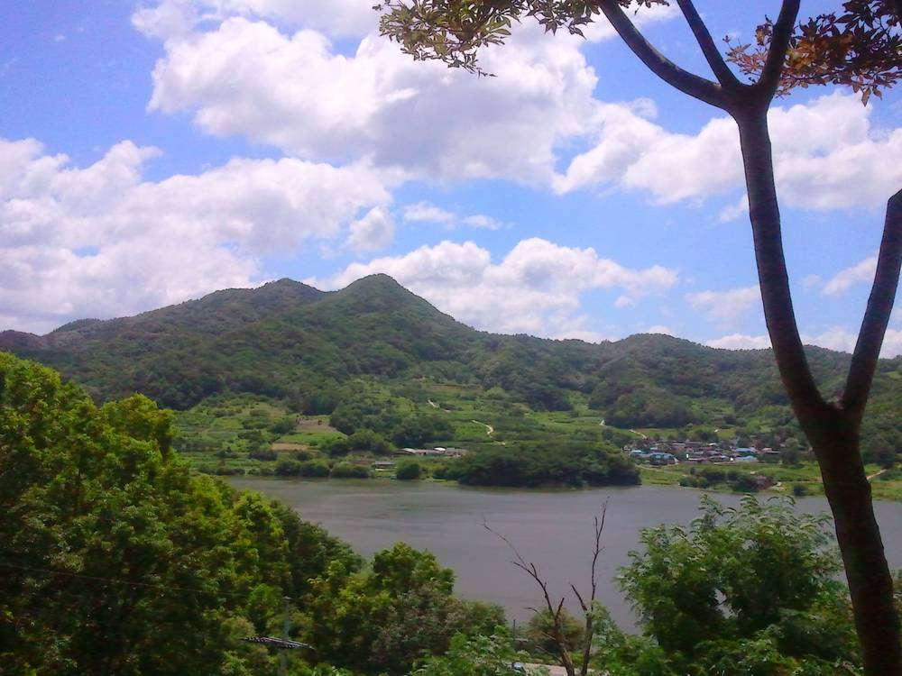
국민연금공단 '마을자치연금' 9개 마을·211명으로…본사 옥상엔 시민·임직원 협동조합 400kW 'NPS 햇빛발전소' 추진
마을 유휴지 약 70kW 태양광 수익 등으로 만 70세 이상 어르신에게 매월 6만~10만 원, 공단이 공공기관 포럼에서 사례 발표…본사 발전소는 수익 전액 에너지 취약계층 지원, 전력 계통 제약은 과제
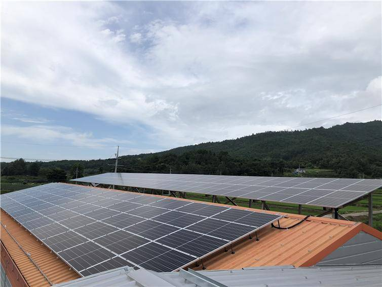
영암군의회 "햇빛소득마을, 수익 나누기 전에 자부담·대출 상환 기준부터"…죽정마을 태양광 500kW·ESS 1.5MWh에 14억 원
주요사업장 현장방문 결과보고서에서 지방소멸대응기금·대출 이자 지원·저금리 금융 협약 검토 요구…영암은 10개 마을 9개 사업 조건부 선정, 보고서 속 수익 계획은 마을기금·취약계층 지원 각 40%

행안부, 주한 외교사절 정책설명회에 사회연대경제 넣고 횡성 하대리 햇빛소득마을 방문 일정 잡아
29~30일 강원 원주·횡성·홍천·춘천 일원, 재난안전 중심이던 소개 범위를 정책 전반으로 넓혀…하대리는 햇빛연금 협동조합 중심으로 주민 65가구 참여, 1,000kW 태양광 추진 계획

강원 햇빛소득마을 2차 선정 42곳 중 41곳 '조건부 승인'…전력망 여유 없어 바로 추진할 수 있는 곳은 원주 만종1리뿐
화천 풍산1리 1MW·연 2억 원 수익 계획도 계통 조건에 묶여…강원도, 한산한 시간에만 전기 보내는 '유연 접속'·ESS 배전망 연계 검토
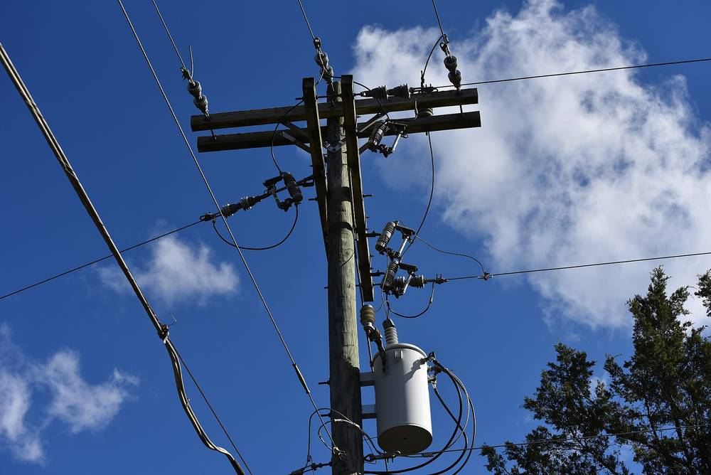
담양 죽림마을 주민들, 협동조합 세워 1MW 햇빛소득마을 준비…예상 매출 2억4,000여만 원, 계통 막혀 4개 마을 묶는 ESS 검토
대출 상환·유지비 빼고 남는 돈은 조합원 배당·마을기금·경로당 복지에…ESS 예상 설치비 한 곳당 약 80억 원, 군 관계자 설명 분담은 정부 40%·민간 30%·지방비 30%로 아직 확정 아냐

영산강유역환경청, 상수원 마을 햇빛소득마을 2030년까지 140곳 계획 설명…마을당 500kW 설치비 7억 원 수계기금 지원
전남댐주민연합회 토론회서 2027년부터 해마다 35곳 조성 계획·2027년 정부안 245억 원 소개…땅 임대료·인허가는 마을 몫, 주민 쪽은 수계기금 여유자금 약 900억 원을 주민 소득에 쓰자고 제안
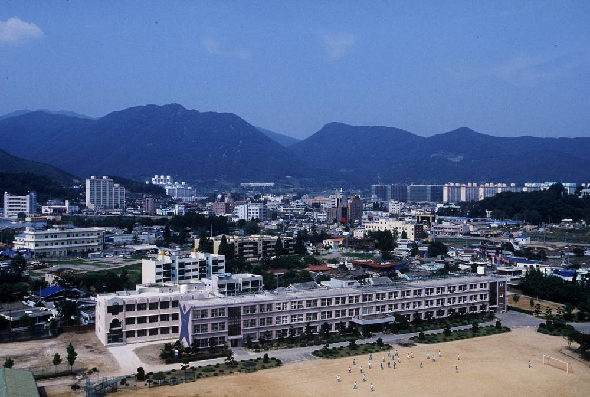
전북도·대통령비서실, 익산 여산면 햇빛소득마을 현장 점검…5개 마을 협동조합 옥금저수지 990kW 수상태양광 준비 상황 살피고 간담회
익산시청 간담회서 ESS 설치 지원·부지 확보·주민 자부담 완화 논의, 익산시는 국공유지 활용 규제 완화 등 4가지 건의…익산 7곳 조건부 선정, 3차 공모 30일 마감

대통령비서실·관계부처, 담양 햇빛소득마을서 현장간담회…전남광주, 전국 최다 126곳 선정에도 조건부 많아 ESS 설치비 부담 완화 등 건의
전국 선정 523곳의 약 24%가 전남광주…계통·부지·자금 보완 필요한 마을 많아 지자체 기준인력 배정·통합관리 플랫폼 구축도 요청, 정부 답변은 알려지지 않아

한국영농형태양광협회·한국탄소중립농업협회, 햇빛소득마을 공동 추진 협약…영농형 태양광에 탄소중립농업·마을사회적경제 묶겠다
23일 사업협력 MOU, 표준모델 개발·시범마을 발굴 등 7개 분야 협력…시범마을·사업비·수익배분은 아직 정하지 않고 별도 협약으로

전남광주 햇빛소득마을 ESS 설치비 지방비 30% 부담…"국비 50%·VPP 사업자 50%로 바꿔야"
1·2차 공모 126곳 선정됐지만 전국 2차 436곳 중 413곳 조건부…호남 상반기 출력제어 8만MWh 넘고 접속 대기 2,000여MW, 1MW 이하 우선접속은 12월 16일 시행
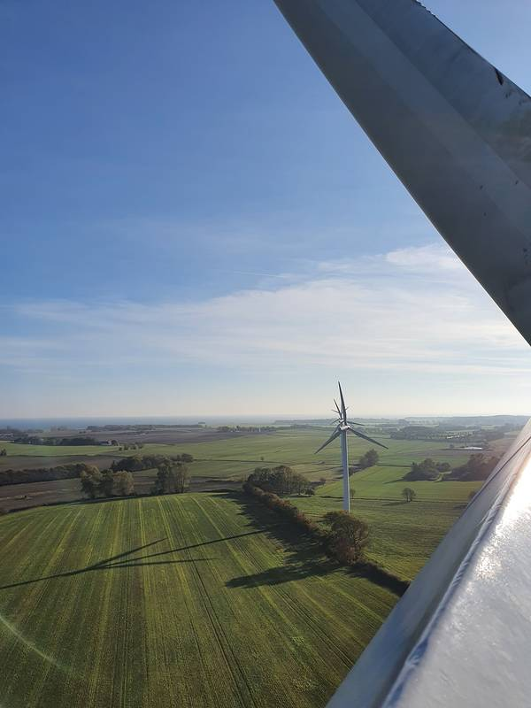
정선군, 군유지 활용 100MW 태양광에 공공 지분 참여 검토…육상풍력 6곳 163.1MW와 함께 햇빛소득·바람소득 구상
강원랜드 배당금과 자연자원 수익을 주민 생활 재원으로 돌린다는 민선 9기 지역경제 구상…태양광 위치·지분율·주민 배분 방식은 아직 알려지지 않아
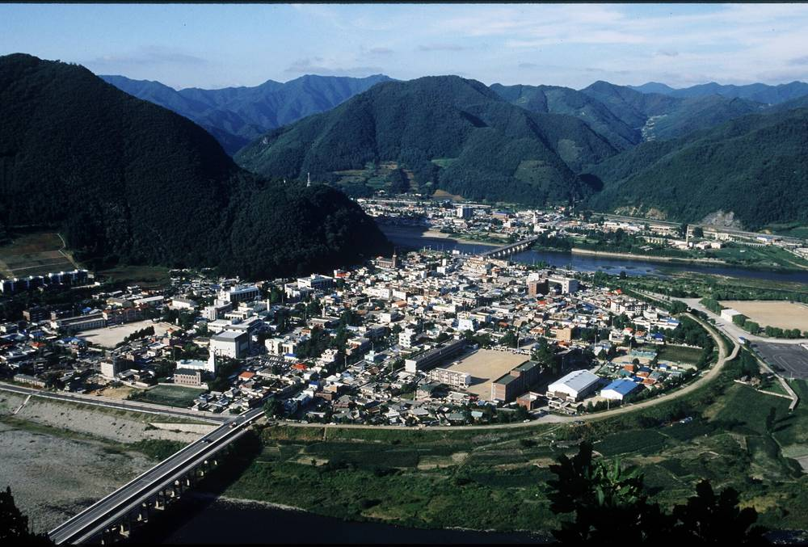
햇빛소득마을 523곳 이름 올렸지만 1차 86곳 중 바로 착수 가능한 곳은 9곳…선정보다 가동 숫자 내놔야 지적
정부 목표 올해 700곳·2030년 3,000곳…나머지 마을은 부지·자금·선로 여유 확인이 숙제, 사업비 15%는 주민 몫·전국 접속 대기 설비 4,000MW
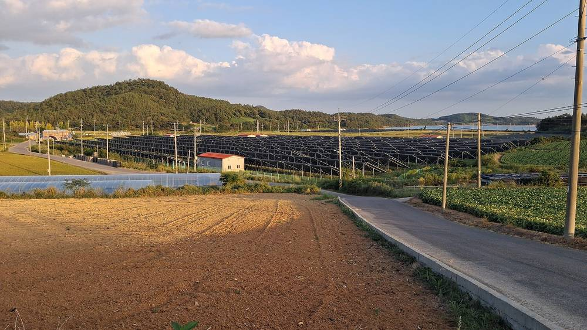
화순군, 공모·상수원 지원금 53억여 원 묶어 2027~2028년 햇빛소득마을·에너지자립형 마을 추진
사평면 절산2리 햇빛소득마을에 13억9,100만 원…마을회관 2곳 설비 5,700만 원, 5개 마을 59가구 주택용 설비 10억6,250만 원
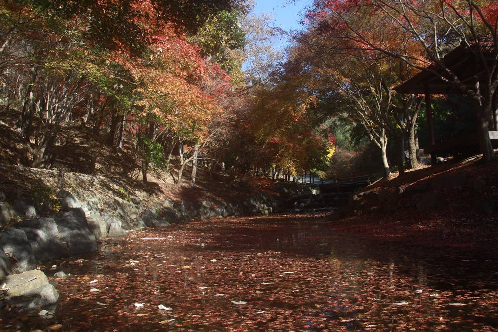
나주 햇빛소득마을 10곳 중 9곳 전력망 포화로 ESS 필요…시의회, 마을 수보다 주민 소득·재정 대책 먼저 요구
황광민 의원 시정질문, 100개 마을이면 지방비 최소 200억 원 주장…윤병태 시장, ESS 비용 정부 40%·지방 30%·사업자 30% 분담안 논의 중이라며 표준모델 마련 약속

영산강유역환경청, 상수원관리지역 햇빛소득마을 9곳 등 6개 시군 11개 사업에 수계기금 92억 원 지원
2027년 새로 도입하는 재생에너지 특별지원사업…햇빛소득마을 73억 원·가구와 마을 공동시설 히트펌프 19억 원, 공모 예산 264억 원 중 남은 몫은 연내 추가 공모
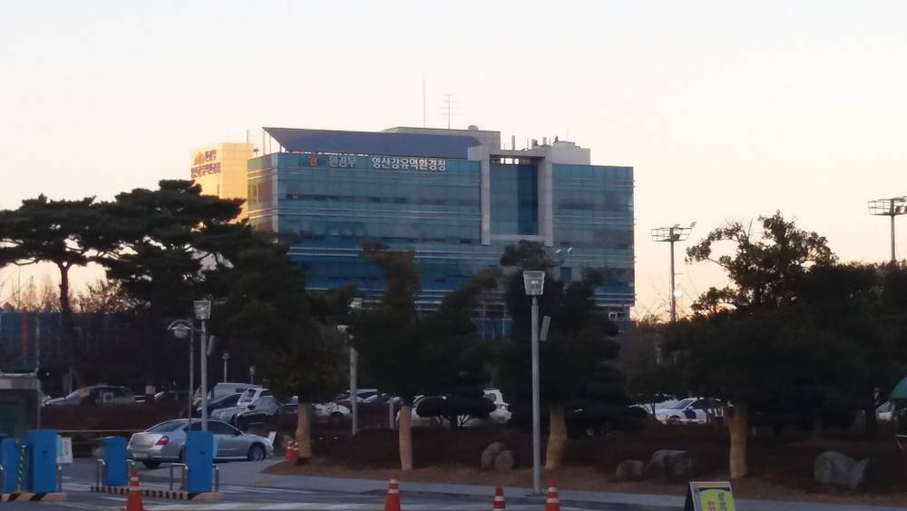
한강수계 상수원 주민지원 355억 원 확정…햇빛소득마을 13곳에 138억 원
2027년도 특별지원사업에 재생에너지 분야 처음 공모해 221억 원 배정…가평·양평·광주·여주·이천·춘천 주민 협동조합이 태양광 설치·운영, 주택 645가구·마을공동시설 51곳도 지원
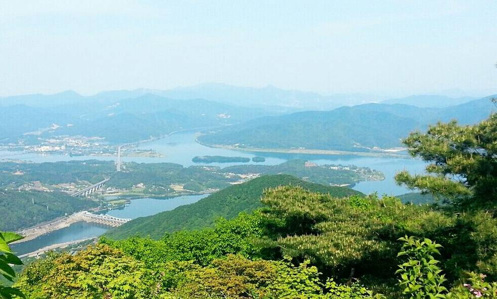
밀양 웅동·중산·용포마을 햇빛소득마을 2차 선정…2곳은 즉시 추진 가능
1차 덕곡마을 더해 4곳…전국 2차 608곳 신청·436곳 선정, 바로 추진할 수 있는 곳은 23곳
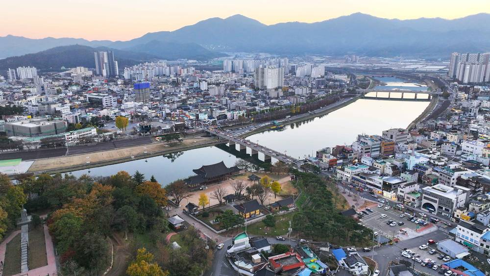
평창 4개 마을 햇빛소득마을 2차 '조건부' 선정…계통 포화로 ESS 연계가 조건
하안미4리·원길2리·면온1리·진조리…같은 선로 마을 추가 선정도 필요, 군 "선정이 곧 발전사업 추진은 아냐"
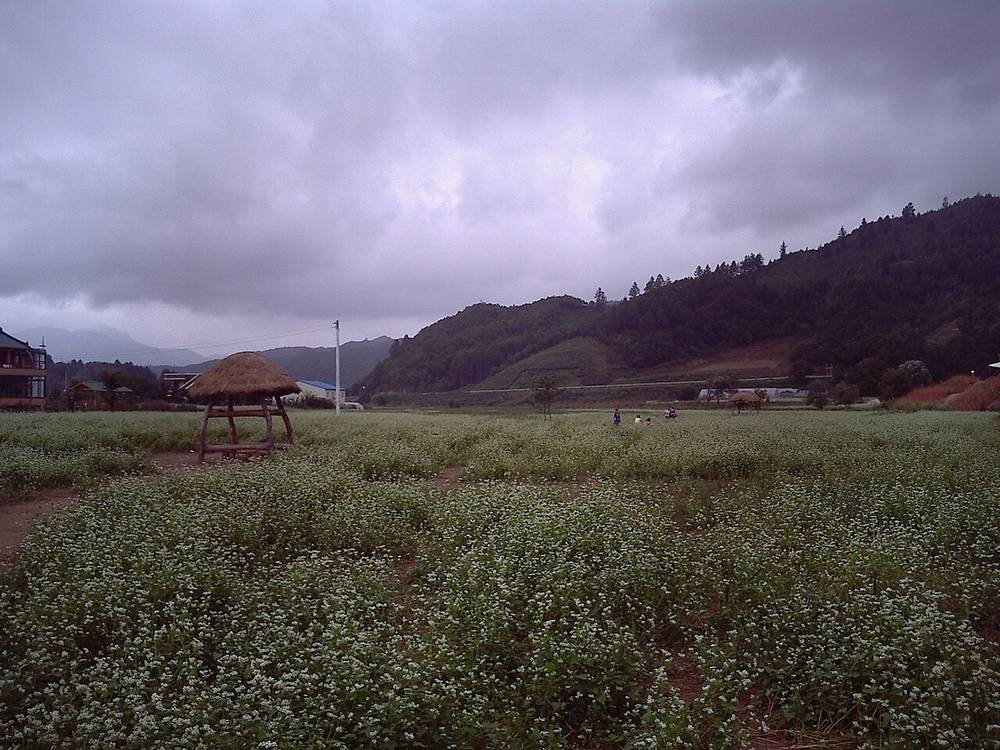
햇빛소득마을 시공·운영 전문기업 243곳 등록…에너지공단, 최저발전량 미달 땐 차액 보전하는 운영지침 시행
ReSCO 등록 4개월 새 86곳(54.8%) 늘어…부실시공 땐 5년 참여 제한, 업체 부도 땐 다른 등록기업 연계, 마을과 실제 계약은 아직 없어
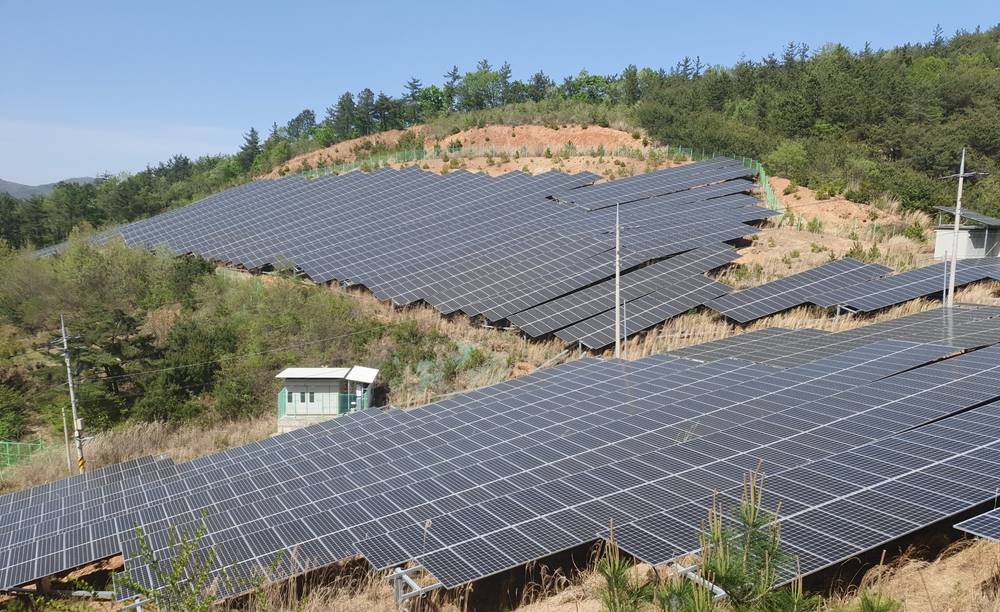
장수군 햇빛소득마을 지원 조례 군의회 통과…공공부지 활용·마을조합 설립 지원 근거 마련
김남수 의원 발의, 14일 제388회 임시회서 원안 가결…기본계획·주민교육·관계기관 협력 근거도 담아
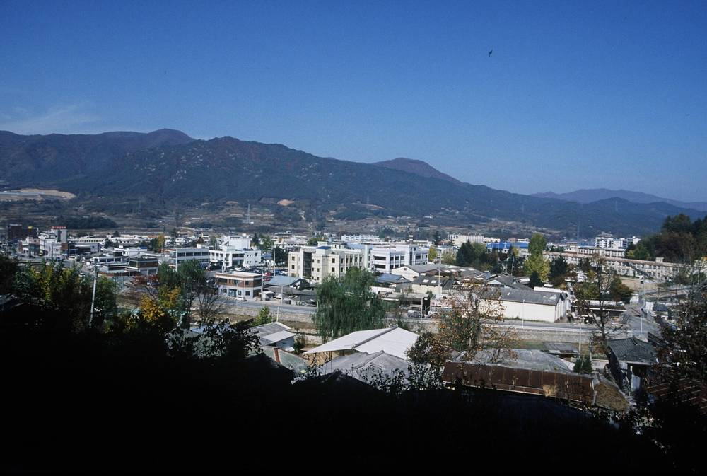
여러 마을이 함께 쓴 저수지, 수상태양광 참여는 부지 마을만…햇빛소득마을 기준 개선 요구
현행 공고는 행정리 안 부지만 인정하고 다른 행정리 부지는 연합조합 구성 조건…행안부 추진단, 올해 3차 선정까지 현행 기준 유지하고 내년 평가 반영 여부 검토
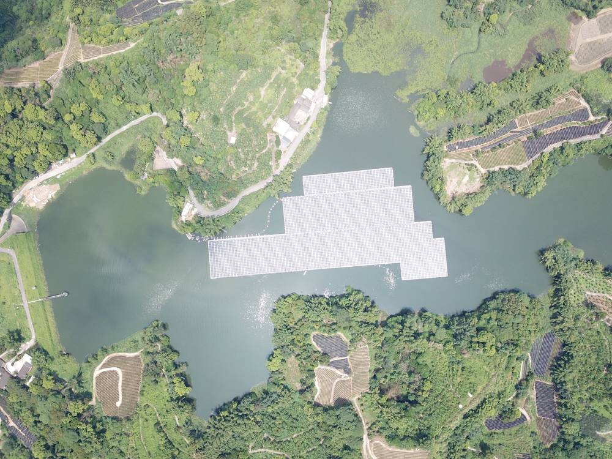
해남군, 2030년까지 햇빛소득마을 100곳 목표…19곳 조건부 선정 이어 3차 공모 접수
마을별 300kW~1MW, 설치비 최대 85% 융자…3차 결과는 12월 말 발표, 신흥·고당마을은 이의신청 예정
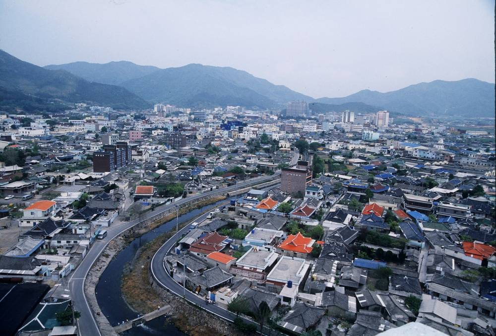


신안 주민참여 태양광, 가입비 1만 원에 수백만 원 배당…주민 실투자 비중은 낮아
안좌도·자라도 120MW, 주민 몫 140억 원은 협동조합 대출로…거리 따라 1인 연 68만~204만 원

太陽光所得村
全南光州の「日差し所得村」126カ所、蓄電池の条件で住民の初期負担重く…イ・ジェチャン市議「廃道・堤防・鉄道周辺まで用地を広げ、住民負担を下げよ」
統合特別市議会の行政監査で道路沿い太陽光など新たな用地の発掘を要求…エネルギー産業本部「仮想発電所事業者を指定し村と協議」
韓国政府「条件付き選定のひなた所得村も事業化を支援」…ESS構築事業を11月公告、1MW以下の住民参加型太陽光の系統優先接続を12月末施行
行政安全部・気候エネルギー環境部・農林畜産食品部が説明資料…「523カ所中すぐ着手できるのは36カ所」との指摘に、貯水池・備蓄農地・道路法面など遊休国公有地の提供を継続
「日差し所得村」選定436カ所のうち、すぐ着手できるのは23カ所…河川区域・韓電の系統・「洞」の名称が壁に
政府は今年700カ所の選定を目標に加速…自治体の規制と送電網不足で現場は止まっている
淳昌郡、公有財産の用地に「太陽光所得村」100カ所…全北開発公社・韓電と公共主導型発電で協約
2030年までの5年間で用地を共同発掘、開発公社が投資・建設・運営…12月に条例制定、来年1月に住民説明会
南原の9村が太陽光所得村に条件付き選定…市議会の研究団体「次は事業化」、用地発掘・自己負担支援など5大課題を議論
驪州・九陽里と完州・西峰村の事例を共有…発電収益で無料の昼食・幸福バス、70歳以上に月5万ウォンの敬老年金
送電網の不足で条件付き選定の和順・水洞村、1MWの太陽光所得村を蓄電池で系統接続へ…設置・運営費は民間の統合発電所事業者が負担
49世帯の住民全員が同意した事業…気候エネルギー環境相が11日に現地点検、今週中に太陽光所得村ESS事業者を公募
韓国の信用協同組合「信協」、市民太陽光から洋上風力・「日差し所得村」まで再エネ金融を拡大…村の発電施設資金を最大85％融資
安山市民太陽光発電協同組合の発電所60カ所建設を支えた経験を生かし、高敞洋上風力に1,000億ウォンの連携融資、エネルギー公団の利子補給で村の負担軽減
韓国「日差し所得村」選定522カ所のうち490カ所が「条件付き」…国会予算委で「着工はほぼゼロ、ブローカーが住民を押しのける恐れ」
2027年度予算案審査の全体会議、来年2,200カ所に拡大する計画に予算は利子補給285億ウォン中心…営農型太陽光の150億ウォンも研究・制度基盤に偏ると指摘
韓国南部発電の再エネ民間提案窓口に19件…世宗・全義、安東・臨東、平沢・古徳の住民に日差し所得村のコンサルティング
7月に開設した再生可能エネルギー24時クリニックの成果を公表、事業提案14件・コンサル4件・研究開発1件…釜山港湾公社と港湾用地の再エネ共同開発協約も
益山市、ひかり所得村の事業区域を「里」から「面」単位へ広げるよう政府に建議
崔正浩市長「発電所の隣の村も一緒に恩恵を受けるべき」…河川斜面・廃校・国公有地まで用地探し、管理機関との協議が課題
慶尚南道のひかり所得村41カ所のうち26カ所が電力網接続できず…道議会「変電所拡充は2030年以降、住民の所得はいつ出るのか」
1・2次選定の33カ所が条件付き…慶尚南道「電力網への優先接続・ESSの国費支援を政府に建議」
梁山・院洞面のテリ・ソンリ・チャンソン村、洛東江水系基金で太陽光所得村を推進…行政安全部の公募申請が残る
洛東江水系管理委員会「2027年再生可能エネルギー特別支援事業」の対象に…設備はテリ360kW・ソンリ999.45kW・チャンソン998.46kW、住民同意率90%・72.9%・71%、来年度の支援予定額20億2,700万ウォン
驪州・九陽里の「村全体が持ち主」の1MW太陽光…担保の壁は信協の4億2,000万ウォンで越えた
法人格のない行政里は社会的協同組合で事業…20年間毎月約1,000万ウォンの純収益が出る構造、収益は世帯ごとに分けず無料の昼食と村のバスに
大田市議会、「太陽光所得村」公募に「法定洞」を含めるよう求める建議案を採択…「『里』でないため申請すらできない」
キム・ミヒ議員が代表発議、議員19人が共同発議…2027年の公募から洞地域の参加と評価基準の整備を要求、大田市は4年間で市費34億ウォンの「大田型太陽光所得村」を構想
麗水のチェ・ドンイク議員「太陽光所得村育成基金2兆ウォンを造成しよう」…市議会5分発言で提案
4年間毎年5,000億ウォン、住民の初期自己資本と長期低利融資に充て、返済金は別の村に再貸付
春川・梧灘1里、協同組合を設立し「日差し所得村」第3次公募に申請…住民82%が同意、999.75kWの太陽光に13億1,000万ウォン
村の規約上の住民149人のうち123人が同意し必須基準の70%を上回る…同じ史北面の梧灘2里は第1次で条件付き選定、結果は12月末に発表
麗水の4村が「日差し所得村」3次公募に申請…2次の条件付き5村は用地・住民参加の手続きへ、系統が詰まる地域はESS併設を検討
10月30日締め切りの3次追加公募、関係機関の検討と行政安全部評価委員会の審査を経て12月末に結果発表…麗水市「行政支援とオーダーメード型コンサルティングを提供」
エネルギー公団、太陽光所得村の登録企業の過去の水増し契約書履歴を確認…業界は事後制裁で村の事業が揺らぐと反発
報道各社の取材では登録243社のうち60社余りが対象…公団は対象数・公表時期を明かさず、問題企業が出れば別の登録企業が村の事業を引き継ぐよう指針に規定
崔東益・全南光州統合特別市議員、統合財政支援で2兆ウォンの太陽光所得村育成基金を提案
5分間自由発言で毎年5,000億ウォンずつ4年間積み立て、村の自己資本と長期低利融資を支援し、返済金は別の村に再び貸し出す仕組みを提示…融資依存が住民所得を削ると指摘、執行部の答弁はまだない
「日差し所得村」推進団、来年度運営経費4億6,100万ウォンを新規計上…第1次選定87村のうち実際に事業推進が可能なのは13村
条件付き選定74村のうち59村（75.6%）は電力網の未整備が原因…選定数より事業開始までの期間や住民に帰属する所得で成果を測るべきとの指摘
済州の「日差し所得村」2カ所が始動…済州道、村の自己負担15%のうち約70%を地方消滅対応基金で支援へ
来年度予算に3億7,000万ウォンを計上、2030年までに10カ所程度を目標…涯月・龍興里の317.985kWは保全地区に阻まれ用途変更の審議待ち、南元邑の村の495kWは来年8月の商業運転を計画、30日締め切りの第3次公募には道内から申請がない見通し
「ヘッビッ所得村」の収益を集落のケア・共同給食に…利川市長と亀尾・大院1里の里長が構想
ソン・スソク利川市長「住民協同組合の太陽光所得で集落の統合ケア」、1,000kWの水上型で条件付き選定された亀尾市玉城面大院1里は「収益が出れば共同給食」…いずれも構想段階で、規模・時期は示されず
国民年金公団の「村自治年金」、9集落・211人に拡大…本社屋上では市民・職員の協同組合による400kW「NPS太陽光発電所」を推進
集落の遊休地に置いた約70kWの太陽光の収益などで、満70歳以上の高齢者に月6万～10万ウォン、公団が公共機関フォーラムで事例発表…本社発電所は収益全額をエネルギー弱者支援に、送電網の制約が課題
霊岩郡議会「ひだまり所得村、収益を分ける前に自己負担・ローン返済の基準を」…竹亭村の太陽光500kW・ESS 1.5MWhに14億ウォン
主要事業所の現地視察結果報告書で地方消滅対応基金・ローン利子支援・低金利の金融協約の検討を要求…霊岩では10村・9事業が条件付き選定、報告書の収益計画は村基金・弱者支援が各40%
韓国行政安全部、駐韓外交使節向け政策説明会に社会連帯経済を加え、横城・下大里の「日差し所得村」訪問を日程に
29～30日に江原道の原州・横城・洪川・春川一帯で開催、災害安全中心だった紹介範囲を政策全般に拡大…下大里は日差し年金協同組合を中心に住民65世帯が参加、1,000kWの太陽光を推進する計画
江原道の太陽光所得村、2次選定42カ所のうち41カ所が条件付き承認…送電網に余裕なく、すぐ着手できるのは原州マンジョン1里だけ
華川プンサン1里の1MW・年2億ウォン収益計画も系統の条件に阻まれる…江原道、空いている時間帯だけ送電する柔軟接続とESSの配電網連系を検討
潭陽・竹林村の住民が協同組合を設立し1MWの日差し所得村を準備…予想売上2億4,000万ウォン余り、系統制約で4村をまとめるESSを検討
融資返済・維持費を除いた残りは組合員配当・村の基金・敬老堂の福祉に…ESSの予想設置費は1カ所当たり約80億ウォン、郡関係者の説明による分担は政府40%・民間30%・地方費30%で、まだ確定していない
韓国・栄山江流域環境庁、上水源地域の太陽光所得村を2030年までに140か所とする計画を説明…1村あたり500kW、設置費7億ウォンを水系基金で支援
全南ダム住民連合会の討論会で2027年から毎年35か所の造成計画と2027年政府案245億ウォンを紹介…土地の賃料・許認可は村の負担、住民側は水系基金の余裕資金約900億ウォンを住民所得に使うよう提案
全北道・大統領秘書室、益山・礪山面の太陽光所得村を現場点検…5集落の協同組合による玉琴貯水池990kW水上太陽光の準備状況を確認し懇談会
益山市庁の懇談会でESS設置支援・用地確保・住民自己負担の軽減を議論、益山市は国公有地活用の規制緩和など4項目を要望…益山で7カ所が条件付き選定、第3次公募は30日締め切り
大統領秘書室・関係省庁、潭陽の日差し所得村で現場懇談会…全南光州、全国最多126カ所選定も条件付きが多くESS設置費の負担軽減など建議
全国選定523カ所の約24%が全南光州…系統・用地・資金の補完が必要な村が多く自治体の基準人員配置・統合管理プラットフォーム構築も要請、政府の回答は伝えられず
韓国営農型太陽光協会・韓国カーボンニュートラル農業協会、日差し所得村の共同推進で協約…営農型太陽光にカーボンニュートラル農業・集落の社会的経済を組み合わせる構想
23日に事業協力MOU、標準モデル開発・モデル村の発掘など7分野で協力…モデル村・事業費・収益配分はまだ決めず別途の協約で
全南光州の日差し所得村、ESS設置費の地方負担30%…「国費50%・VPP事業者50%に改めるべき」
1・2次公募で126カ所が選定されたが全国2次436カ所のうち413カ所は条件付き…湖南の上半期出力制御は8万MWh超、接続待ち2,000MW余り、1MW以下の優先接続は12月16日施行
旌善郡、郡有地を活用した100MW太陽光に公共の持ち分参加を検討…陸上風力6カ所163.1MWとともに「太陽光所得・風所得」構想
江原ランドの配当金と自然資源の収益を住民生活の財源に回すという民選9期の地域経済構想…太陽光の場所・持ち分比率・住民への配分方法はまだ明らかでない
太陽光所得村は523カ所が選定されたが1次86カ所のうちすぐ着工できたのは9カ所…選定数より稼働数を示すべきとの指摘
政府目標は今年700カ所・2030年3,000カ所…残る村は用地・資金・送電線の余裕確認が課題、事業費の15%は住民負担・全国の接続待ち設備は4,000MW
和順郡、公募と上水源支援金の53億ウォン余りを束ね、2027～2028年に太陽光所得村とエネルギー自立型村を推進
サピョン面チョルサン2里の太陽光所得村に13億9,100万ウォン…村の集会所2カ所の設備に5,700万ウォン、5つの村の59世帯に住宅用設備10億6,250万ウォン
羅州の「日差し所得村」10村中9村が送配電網の飽和でESSが必要…市議会、村の数より住民所得と財政対策を先にと要求
ファン・グァンミン議員が市政質問、100村なら地方費は最低200億ウォンと主張…ユン・ビョンテ市長、ESS費用を政府40%・地方30%・事業者30%で分担する案を協議中とし標準モデル整備を約束
栄山江流域環境庁、上水源管理地域の太陽光所得村9か所など6市郡11事業に水系基金92億ウォンを支援
2027年に新設する再生可能エネルギー特別支援事業…太陽光所得村に73億ウォン、世帯と村の共同施設のヒートポンプに19億ウォン、公募予算264億ウォンの残りは年内に追加公募
漢江水系の上水源住民支援355億ウォン確定…日差し所得村13カ所に138億ウォン
2027年度特別支援事業で再生可能エネルギー分野を初めて公募し221億ウォンを配分…加平・楊平・広州・驪州・利川・春川の住民協同組合が太陽光を設置・運営、住宅645世帯・集落共同施設51カ所も支援
密陽のウンドン・チュンサン・ヨンポ村が太陽光所得村の第2次に選定…2カ所はすぐ推進可能
第1次のトッコク村と合わせ4カ所…全国の第2次は608カ所が申請・436カ所を選定、すぐ推進できるのは23カ所
平昌の4集落が「太陽光所得村」第2次公募に「条件付き」選定…系統の飽和でESS連系が条件
下安味4里・院吉2里・綿温1里・陳鳥里…同じ配電線の集落の追加選定も必要、郡「選定がすぐ発電事業の推進を意味するわけではない」
太陽光所得村の施工・運営専門企業が243社登録…エネルギー公団、最低発電量に届かなければ差額を補填する運営指針を施行
ReSCO登録は4か月で86社（54.8%）増加…手抜き工事なら5年間の参加制限、業者倒産時は別の登録企業につなぐ、村との実際の契約はまだゼロ
長水郡の太陽光所得村支援条例が郡議会を通過…公共用地の活用・村組合設立支援の根拠を整備
キム・ナムス議員が発議、14日の第388回臨時会で原案可決…基本計画・住民教育・関係機関との協力の根拠も盛り込む
複数の集落がともに使ってきた貯水池、水上太陽光に参加できるのは用地の集落だけ…太陽光所得村の基準見直しを求める声
現行の公告は行政里内の用地のみを認め、他の行政里の用地は連合組合の結成が条件…行政安全部推進団は今年の第3次選定まで現行基準を維持し、来年の評価への反映を検討
海南郡、2030年までに太陽光所得村100カ所を目標…19カ所の条件付き選定に続き第3次公募を受け付け
村ごとに300kW～1MW、設置費の最大85%を融資…第3次の結果は12月末に発表、新興・古堂の2村は異議申し立ての予定
新安の住民参加型太陽光、加入費1万ウォンで数百万ウォンの配当…住民の実投資比率は低く
安佐島・チャラ島の120MW、住民分140億ウォンは協同組合の融資で…距離に応じて1人年68万〜204万ウォン
阳光收入村
全南光州126个"阳光收入村"因储能条件背负沉重初期负担…市议员李在昌："把用地扩大到废弃道路、堤坝和铁路周边，降低居民负担"
统合特别市议会行政监察中要求开发道路沿线太阳能等新用地…能源产业本部："将指定虚拟电厂运营商与村庄协商"
韩国政府称“附条件入选的阳光收入村也将支持落地”：储能建设项目11月招标，1MW以下居民参与型太阳能电网优先接入12月底实施
行政安全部、气候能源环境部、农林畜产食品部发布说明材料，回应“523个村仅36个可立即开工”的批评，将继续提供水库、储备农地、道路边坡等闲置国有和公有土地
淳昌郡将在公有地上建设100个“阳光收入村”，与全北开发公社、韩电签署公共主导型发电协议
到2030年的5年间共同寻找用地，开发公社负责投资、建设和运营；12月制定条例，明年1月召开居民说明会
南原9个村附条件入选阳光收入村，市议会研究团体称“下一步是落地”，讨论用地发掘、自筹支持等五大课题
分享骊州九阳里、完州西峰村经验：用发电收益提供免费午餐、幸福巴士，70岁以上老人每月5万韩元敬老金
因电网受限附条件入选的和顺水洞村1MW阳光收入村，将借储能装置接入电网，安装和运营费用由民间虚拟电厂运营商承担
49户居民全体同意的项目；气候能源环境部长官11日现场检查，本周内公开招募阳光收入村储能项目运营商
韩国信用合作社“信协”将可再生能源金融从市民光伏扩展至海上风电和“阳光收入村”…村级发电设施资金最高可贷85%
凭借支持安山市民阳光发电合作社建成60座电站的经验，参与高敞海上风电1,000亿韩元联合贷款，能源公团贴息减轻村庄利息负担
韩国"阳光收入村"入选522处中490处为"附条件"…国会预算委员会："几乎没有开工，中介可能把居民挤出去"
2027年度预算案审议全体会议：明年计划扩大至2,200处，预算却以285亿韩元贴息为主；农光互补150亿韩元也被指偏重研究与制度建设
韩国南部发电可再生能源民间提案窗口收到19件…为世宗全义、安东临东、平泽古德居民提供阳光收入村咨询
公布7月开设的可再生能源24小时诊所成果，项目提案14件、咨询4件、研发1件…并与釜山港湾公社签署港口用地可再生能源共同开发协议
庆尚南道41个阳光收入村中26个无法接入电网…道议会："变电站扩建要到2030年以后，居民收入何时才有"
第一、二批入选村庄中33个为附条件入选…庆南道："已向政府建议电网优先接入、由国费支持储能设施"
梁山院洞面Dae-ri、Seon-ri、Jangseon三村借洛东江水系基金推进阳光收入村…尚待申请行政安全部公开征选
列入洛东江水系管理委员会“2027年可再生能源特别支援事业”对象…装机Dae-ri 360kW、Seon-ri 999.45kW、Jangseon 998.46kW，居民同意率90%、72.9%、71%，明年预计支援20亿2,700万韩元
骊州九阳里"全村当家"的1MW太阳能电站：靠信协4.2亿韩元越过担保门槛
没有法人资格的行政里通过社会合作社开展项目；20年间每月约1,000万韩元纯收益的结构，收益不按户分配，用于免费午餐和村巴士
大田市议会通过建议案，要求"阳光收入村"公募纳入"法定洞"："不是'里'，连申请都不行"
金美熙议员领衔、19名议员联署…要求自2027年公募起允许洞地区参与并完善评审标准，大田市构想4年投入市财政34亿韩元打造"大田型阳光收入村"
春川梧滩1里组建合作社申请"阳光收入村"第三轮公募…82%居民同意，13.1亿韩元建999.75kW光伏
按村规约计的149名居民中123人同意，超过70%的必备标准…同属史北面的梧滩2里在第一轮获有条件入选，结果12月底公布
丽水4个村庄申请"阳光收入村"第三轮公募…第二轮附条件入选的5个村推进用地和居民参与程序，电网受阻地区考虑配套ESS
第三轮追加公募10月30日截止，经相关机构审查和行政安全部评审委员会审议后于12月底公布结果…丽水市"提供行政支持和定制化咨询"
能源公团核查阳光收入村登记企业过去的虚高合同记录…业界担忧事后制裁动摇村庄项目
据媒体采访，243家登记企业中约60家被列为对象…公团未公布对象数量和公布时间，指南规定问题企业出现时由其他登记企业接手村庄项目
全南光州统合特别市议员崔东益提议利用统合财政支援设立2万亿韩元阳光收入村培育基金
在5分钟自由发言中提出每年筹集5,000亿韩元、连续4年，支援村庄自有资本和长期低息贷款，还款再借给其他村庄…指出依赖贷款会侵蚀居民收入，执行部门尚未答复
韩国"阳光收入村"推进团明年新增运营经费4.61亿韩元…首批入选87个村中实际可推进的仅13个
74个附条件入选村中有59个（75.6%）卡在电网不足…有意见认为应以项目启动所需时间和居民所得收入而非入选数量衡量成效
济州两个"阳光收入村"起步…济州道拟用地方消亡应对基金承担村庄自付15%中的约70%
明年预算编列3亿7,000万韩元，目标到2030年建成约10个…涯月龙兴里317.985kW因保护区受阻、正待用途变更审议，南元邑村庄495kW计划明年8月商业运行，30日截止的第三轮征集预计济州无村庄申请
"阳光收入村"收益用于村庄照护和集体供餐…利川市长与龟尾大院1里里长提出设想
利川市长成水锡称"以居民合作社的阳光收入实现村庄综合照护"，获有条件选定建设1,000kW水上太阳能的龟尾市玉城面大院1里表示"有了收益就办集体供餐"…两者均处于设想阶段，规模和时间均未公布
韩国国民年金公团"村自治年金"扩至9个村、211人…总部屋顶推进由市民和职员合作社参与的400kW"NPS阳光电站"
以村闲置土地上约70kW太阳能的收益等，每月向70岁以上老人发放6万至10万韩元，公团在公共机构论坛上发表案例…总部电站收益将全部用于支援能源弱势群体，电网制约仍是难题
灵岩郡议会："阳光收入村分配收益前，先定自付和贷款偿还标准"…竹亭村光伏500kW、储能1.5MWh投资14亿韩元
主要项目现场考察结果报告要求研究利用地方消亡应对基金、贷款贴息和低息金融协议…灵岩10个村9个项目获有条件入选，报告中的收益计划为村基金和弱势群体支援各40%
韩国行政安全部在驻韩外交使节政策说明会中加入社会连带经济，并安排参观横城下大里"阳光收入村"
29日至30日在江原道原州、横城、洪川、春川一带举行，介绍范围由灾害安全扩大到政策全领域……下大里以阳光年金合作社为中心，65户居民参与，计划推进1,000kW光伏
韩国江原道阳光收入村第二批入选42个村中41个获附条件批准，电网余量不足，可立即推进的只有原州Manjong1里
华川Pungsan1里1MW、年收益2亿韩元的计划也受电网条件所困，江原道研究只在电网空闲时送电的灵活接入和ESS配电网连接方案
潭阳竹林村村民成立合作社筹备1MW阳光收入村…预计销售额2.4亿多韩元，因电网受限考虑建设串联4个村的储能设施
扣除贷款偿还和维护费后的余额用于社员分红、村公共基金和敬老堂福利…储能设施预计每处安装费约80亿韩元，据郡方相关人士介绍分摊比例为政府40%、民间30%、地方财政30%，尚未确定
韩国荣山江流域环境厅介绍上游水源地阳光收入村计划，至2030年建成140个…每村500千瓦、安装费7亿韩元由水系基金承担
在全南水库居民联合会讨论会上介绍自2027年起每年建设35个的计划及2027年政府预算案245亿韩元…土地租金和审批由村庄承担，居民方提议将约900亿韩元水系基金结余用于增加居民收入
全北道与总统秘书室赴益山砺山面"阳光收入村"现场考察…查看5个村庄合作社玉琴水库990kW水上太阳能筹备情况并召开座谈会
益山市厅座谈会讨论储能设施支持、用地保障、减轻居民自筹负担，益山市提出放宽国有公有土地使用限制等4项建议…益山7处有条件入选，第三批申报30日截止
总统秘书室与相关部门在潭阳阳光收入村举行现场座谈…全南光州入选数全国最多达126个，但多为附条件入选，建议减轻ESS安装费负担等
全国523个入选村约24%在全南光州…不少村需补足电网、用地和资金条件，并要求向地方政府配置基准人力、建设统一管理平台，政府回应尚未披露
韩国农光互补协会与韩国碳中和农业协会签署阳光收入村共同推进协议…拟将农光互补与碳中和农业、村级社会经济相结合
23日签署业务合作MOU，在标准模式开发、示范村发掘等7个领域合作…示范村、项目费用和收益分配尚未确定，将另签协议
全南光州阳光收入村ESS安装费地方承担30%…"应改为国费50%、VPP运营商50%"
第1、2批公募共126个村入选，但全国第2批436个村中413个为附条件入选…湖南上半年弃电超8万MWh、待并网约2,000MW，1MW以下优先并网12月16日施行
韩国旌善郡研究由公共部门以股份参与利用郡有地的100MW太阳能项目，与6处共163.1MW陆上风电一起推进阳光收入和风力收入构想
第九届民选郡政府的地方经济构想：把江原乐园分红和自然资源收益用作居民生活财源…太阳能项目位置、持股比例和居民分配方式尚未公开
阳光收入村已有523处入选，但首批86处中可立即开工的仅9处，有观点认为应先公布投运数量而非入选数量
政府目标为今年700处、2030年3,000处…其余村庄须解决用地、资金和线路余量问题，项目费用15%由居民承担，全国等待并网的发电设备达4,000MW
韩国和顺郡整合公募资金与水源地支援金53亿多韩元，2027～2028年推进阳光收入村和能源自立型村庄
Sapyeong面Jeolsan 2里阳光收入村投入13亿9,100万韩元…2处村会馆设备5,700万韩元，5个村庄59户住宅用设备10亿6,250万韩元
罗州"阳光收入村"10个中9个因输配电网饱和需配储能…市议会要求先看居民收入和财政对策而非村庄数量
议员Hwang Gwang-min市政质询称100个村地方财政负担至少200亿韩元…市长Yoon Byeong-tae表示储能费用由政府40%、地方30%、发电企业30%分担的方案正在讨论，承诺制定标准模式
荣山江流域环境厅向水源管理地区9个阳光收入村等6个市郡11个项目提供92亿韩元水系基金
2027年新设的可再生能源特别支援项目…阳光收入村73亿韩元，农户和村庄公共设施热泵19亿韩元，264亿韩元招募预算的剩余部分将于年内追加招募
韩国汉江水系水源地居民支援355亿韩元敲定…13个阳光收入村获138亿韩元
2027年度特别支援项目首次公开征集可再生能源类项目并分配221亿韩元…加平、杨平、广州、骊州、利川、春川的居民合作社建设并运营太阳能，645户住宅和51处村庄公共设施也获支持
密阳Ungdong、Jungsan、Yongpo三村入选第二批阳光收入村，其中两村可立即推进
加上第一批Deokgok村共4个村；全国第二批608个村申请、436个入选，可立即推进的为23个
阳光收入村施工运营专业企业登记达243家…能源公团施行运营指南，发电量低于最低标准须补足差额
ReSCO登记企业4个月增加86家（54.8%）…施工不良将被禁止参与5年，企业破产时可对接其他登记企业，与村庄的实际合同仍为零
长水郡阳光收入村支援条例在郡议会通过，确立利用公共用地和支持设立村组合的依据
议员Kim Nam-su提案，14日第388次临时会按原案通过；还写入基本计划、居民教育和与相关机构合作的依据
多个村庄共用的水库，只有场地所在村能参与水面太阳能…阳光收入村标准遭要求修改
现行公告只认可行政里内的场地，使用其他行政里场地须组建联合合作社…行政安全部推进团表示今年第三轮评选前维持现行标准，并研究是否在明年评审中反映
Sunlight Income Village
19 Villages in Nine Gangwon Counties Apply for Third Round of Korea's "Sunlight Income Village" Program; Results Due in December
46 villages in the province were already selected in the first two rounds; ministry says third round will support more than 200 communities nationwide
126 'Sunshine Income Villages' in South Jeolla–Gwangju Face Heavy Upfront Costs From Storage Conditions; Councillor Calls for Sites on Disused Roads, Embankments and Rail Land
At an audit of the integrated city council, Lee Jae-chang urged new sites such as roadside solar; the energy bureau says it will appoint a virtual power plant operator to work with villages
Korea says conditionally selected Sunlight Income Villages will get help to break ground; storage scheme to be tendered in November, grid priority for resident solar under 1MW from end-December
Interior, climate and agriculture ministries respond to report that only 36 of 523 villages can start at once, pledge more idle public land such as reservoirs, reserve farmland and road slopes
Only 23 of 436 Selected Sunlight Income Villages Can Start Right Away, Held Back by River Zoning, Grid Limits and a Village Name
The government aims to pick 700 villages this year, but local rules and a lack of grid capacity have stalled projects on the ground
Sunchang Plans 100 Sunlight Income Villages on County Land in Public-Led Solar Pact with Provincial Developer and KEPCO
Partners will find sites together over five years to 2030, with the developer investing, building and operating; an ordinance is due in December and resident briefings in January
Nine Namwon Villages Conditionally Selected as Sunlight Income Villages; Council Study Group Says 'Now Make Them Real,' Weighs Five Tasks
Cases from Guyang-ri in Yeoju and Seobong village in Wanju shared: free lunches, a 'happiness bus' and pensions of ₩50,000 a month for residents over 70
Hwasun's Sudong village, held back by grid limits, turns to battery storage to connect its 1MW Sunlight Income Village project, with private VPP operators paying for the batteries
All 49 households backed the project; climate minister inspects the site on Nov. 11 as the ministry prepares to tender ESS operators this week
Korea's Shinhyup Credit Unions Widen Renewable Finance From Citizen Solar to Offshore Wind and 'Sunlight Income Villages', Lending Up to 85% of Village Plant Costs
Building on its support for the 60 plants of the Ansan citizens' solar cooperative, Shinhyup joins a 100 billion won syndicated loan for Gochang offshore wind, while an energy agency interest subsidy eases village borrowing costs
490 of 522 Selected Korean "Sunlight Income Villages" Approved Only on Conditions; Budget Committee Told "Almost None Have Broken Ground, and Brokers Could Push Residents Aside"
At a 2027 budget review session, lawmakers noted the plan to expand to 2,200 villages next year rests mainly on 28.5 billion won in interest subsidies, while 15 billion won for agrivoltaics goes largely to research and rules
Korea Southern Power's Renewable Proposal Window Draws 19 Submissions; Residents in Three Villages Receive Sunlight Income Village Consulting
Results of the Renewable Energy 24-Hour Clinic opened in July: 14 project proposals, four consulting requests and one R&D proposal, plus a joint development agreement with Busan Port Authority for renewables on port land
Iksan to Pair Agrivoltaics With Sunlight Income Villages, Offering Finance and Storage Support Ahead of December Law
Mayor Choi Jeong-ho says panels cover around 20% of farmland and power income outweighs the loss; permits, installation costs and grid connection remain hurdles
Iksan Asks Government to Widen Sunlight Income Villages From Single Villages to Whole Townships
Mayor Choi Jeong-ho says neighbouring villages should share the benefits; river slopes, closed schools and public land eyed as sites, but agency approvals remain a hurdle
26 of South Gyeongsang's 41 Sunlight Income Villages Cannot Connect to the Grid; Councillor Warns Substation Upgrades Will Not Come Before 2030
33 villages from the first two rounds were selected on conditions; the province says it has asked Seoul for priority grid access and state-funded storage
Three villages in Wondong-myeon, Yangsan, pursue Sunlight Income Villages with Nakdong River basin funds; application to interior ministry contest still ahead
Selected for the Nakdong River Basin Management Committee's 2027 renewable energy special support programme; planned capacity 360kW at Dae-ri, 999.45kW at Seon-ri and 998.46kW at Jangseon, resident consent 90%, 72.9% and 71%, with 2.027 billion won in support planned for next year
Damyang County Asks Government to Fund Storage and Ease Local Cost Burden to Fix Grid Problem for Sunlight Income Villages
Talks held after presidential office officials toured Jungnim Village... progress of four conditionally selected villages to be checked
Yeoju's Guyang-ri builds a 1 MW solar plant owned by the whole village, clearing a collateral wall with a 420 million won credit union loan
With no legal personality, the village runs the project through a social cooperative; the plant is structured to net about 10 million won a month for 20 years, spent on free lunches and a village bus rather than split among households
Daejeon City Council adopts motion to open "sunshine income village" program to urban dong areas: "Shut out just because we're not a ri"
Moved by Councillor Kim Mi-hee with 19 co-sponsors, it asks that dong areas be eligible from the 2027 call with revised scoring rules; the city is planning a 3.4 billion won "Daejeon-style" village program over four years
Yeosu lawmaker Choi Dong-ik proposes 2 trillion won "Sunlight Income Village Fund" in council floor speech
500 billion won a year for four years to cover residents' initial equity and long-term low-interest loans, with repayments relent to other villages
Chuncheon's Otan 1-ri forms a co-operative and applies for the third round of the "Sunlight Income Village" scheme, with 82% of residents in favour of a 999.75kW, 1.31 billion won solar plant
123 of the 149 residents counted under the village bylaws agreed, clearing the 70% threshold; neighbouring Otan 2-ri in the same township was conditionally selected in round one, and results are due at the end of December
Four Yeosu villages apply in third round of Korea's Sunlight Income Village scheme; five conditionally selected in round two move to secure land and residents, ESS considered where the grid is full
The additional round closed on October 30 and results are due at the end of December after agency review and an Interior Ministry evaluation panel; Yeosu City pledges administrative support and tailored consulting
Energy agency reviews past inflated-contract records of Sunlight Income Village contractors as industry warns late sanctions could unsettle village projects
Media reporting puts about 60 of 243 registered firms under review; the agency will not disclose numbers or timing, and its guidelines let another registered firm take over a village project if a sanctioned contractor runs into trouble
Gwangju-Jeonnam councillor Choi Dong-ik proposes 2 trillion won Sunlight Income Village fund from integration subsidies
In a five-minute floor speech he outlined setting aside 500 billion won a year for four years to back village equity and long-term low-interest loans, with repayments relent to other villages; he warned loan dependence eats into residents' income, and the executive has yet to respond
Korea's Sunlight Income Village task force gets a new 461 million won operating budget, but only 13 of 87 first-round villages can actually proceed
Of 74 villages selected on conditions, 59 (75.6%) are held back by an inadequate grid; critics say success should be measured by time to start-up and resident income, not the number of villages selected
Jeju's first two Sunlight Income Villages get under way as the province moves to cover about 70% of villages' 15% self-funded share from its regional decline fund
370 million won set aside in next year's budget, with a goal of about 10 villages by 2030; Aewol's Yongheung-ri (317.985kW) is held up by a conservation zoning review, a Namwon-eup village (495kW) plans commercial operation next August, and no Jeju village is expected to apply in the third round closing on the 30th
Solar income villages: Icheon mayor and a Gumi village head float plans to spend profits on community care and shared meals
Icheon Mayor Seong Su-seok wants resident cooperatives' solar income to fund integrated village care; Daewon 1-ri in Okseong-myeon, Gumi, conditionally selected for a 1,000kW floating solar project, is considering a shared meal service once income comes in. Both are still ideas, with no figures or timelines
National Pension Service's "village pension" reaches 9 villages and 211 seniors; 400kW rooftop plant with citizen-staff cooperative planned at its headquarters
Income from about 70kW of solar on idle village land and other sources pays residents aged 70 and over 60,000 to 100,000 won a month, the NPS said at a public-sector forum; all income from the headquarters plant is to go to energy-poor households, but grid limits remain an obstacle
Yeongam county council tells solar income villages to set self-funding and loan repayment rules before sharing revenue; Jukjeong village plans 500kW of solar and 1.5MWh of storage for 1.4 billion won
A site-visit report asks the county to consider its local-decline response fund, loan interest support and low-interest finance agreements; 10 villages in Yeongam were conditionally selected for nine projects, and the report's revenue plan puts 40% each into a village fund and support for vulnerable residents
Korea's interior ministry adds the social and solidarity economy to its briefing for foreign diplomats, with a visit to a Hoengseong sunlight income village on the schedule
Held Oct. 29-30 around Wonju, Hoengseong, Hongcheon and Chuncheon in Gangwon, the briefing widens its scope from disaster safety to the ministry's broader policies; in Hadae-ri, 65 households are taking part through a sunlight pension cooperative that plans a 1,000kW solar project
41 of 42 Gangwon Sunlight Income Villages in second round get only conditional approval as grid runs out of room; just Manjong 1-ri in Wonju can start now
Pungsan 1-ri in Hwacheon, planning a 1 MW plant earning 2 billion won a year, is also held up by grid conditions; Gangwon Province weighs flexible connection and ESS-linked distribution
Residents of Jungnim village in Damyang form a cooperative to prepare a 1MW sunlight income village; expected sales of over 240 million won, and grid limits push the county to consider an ESS shared by four villages
What remains after loan repayments and upkeep will go to member dividends, a village fund and senior-centre welfare; the ESS is expected to cost about 8 billion won per site, with a 40% government, 30% private and 30% local split described by a county official but not yet settled
Yeongsan River Basin Environmental Office outlines plan for 140 Sunlight Income Villages in water-source areas by 2030, with river basin fund covering 700 million won installation cost per 500kW village plant
At a forum held by the South Jeolla dam residents' federation, officials presented a plan for 35 villages a year from 2027 and 24.5 billion won in the 2027 government budget proposal; land rent and permits fall to villages, while residents proposed using about 90 billion won in surplus fund money for local income
Jeonbuk and presidential secretariat inspect sunlight income village in Iksan, checking five villages' cooperative plan for 990kW of floating solar on Okgeum Reservoir
Meeting at Iksan City Hall discusses battery storage support, sites and residents' own contributions; Iksan makes four requests including easier use of state and public land and has seven villages conditionally selected; third call closes Oct. 30
Presidential secretariat and ministries hold on-site meeting at Damyang sunlight income village; Jeonnam-Gwangju, with a national-high 126 villages selected but many only conditionally, seeks relief on ESS costs
About 24% of the 523 villages selected nationwide are in Jeonnam-Gwangju; with many needing grid, land and financing fixes, the city also asked for local staffing standards and an integrated management platform, while no government response has been reported
Korea Agrivoltaic Association and Korea Carbon Neutral Agriculture Association sign pact to jointly pursue sunlight income villages combining agrivoltaics, low-carbon farming and village social economy
Business cooperation MOU signed on the 23rd covers seven areas including a standard model and pilot villages; pilot sites, project costs and revenue sharing are yet to be decided in separate agreements
Jeonnam-Gwangju sunlight income villages carry 30% local share of ESS costs; city seeks "50% state, 50% VPP operators"
126 villages selected in the first two rounds, but 413 of 436 second-round villages nationwide were chosen on conditions; Honam curtailment topped 80,000 MWh in the first half with about 2,000 MW waiting for grid access; priority connection for projects of 1 MW or less takes effect December 16
Jeongseon County weighs a public equity stake in 100MW of solar on county-owned land, alongside six onshore wind projects totaling 163.1MW, under a sunlight and wind income plan
Part of the county's economic vision to turn Kangwon Land dividends and natural-resource revenue into funding for residents; the solar project's location, ownership share and how residents would benefit have not been disclosed
523 Sunlight Income Villages selected, but only 9 of the first 86 were ready to start at once, prompting calls to report how many are running rather than how many are chosen
Government targets 700 villages this year and 3,000 by 2030; the rest must still secure land, money and grid headroom, residents cover 15% of costs, and 4,000MW of generation nationwide is waiting for grid connection
Hwasun County pools over 5.3 billion won from a competitive grant and water-source area support to pursue a Sunlight Income Village and energy self-reliant villages in 2027-2028
1.391 billion won for a Sunlight Income Village in Jeolsan 2-ri, Sapyeong-myeon; 57 million won for equipment at two village halls; 1.0625 billion won for home systems in 59 households across five villages
Nine of Naju's 10 sunlight income villages need battery storage because the grid is full; council member urges resident income and funding plans before expansion
Councillor Hwang Gwang-min says 100 villages would cost the city at least 20 billion won; Mayor Yoon Byeong-tae says a 40-30-30 split of storage costs among central government, local government and generators is under discussion and promises a standard model
Yeongsan River Basin Environmental Office grants 9.2 billion won from its water system fund to 11 projects in 6 cities and counties, including 9 Sunlight Income Villages in water-source areas
A renewable energy support programme launching in 2027 puts 7.3 billion won into Sunlight Income Villages and 1.9 billion won into heat pumps for homes and village facilities; the rest of the 26.4 billion won budget goes to a second call this year
Han River basin finalizes 35.5 billion won for water-source residents, including 13.8 billion won for 13 Sunlight Income Villages
The 2027 special support program opened a renewable energy category for the first time with 22.1 billion won; resident cooperatives in Gapyeong, Yangpyeong, Gwangju, Yeoju, Icheon and Chuncheon will install and run solar, and 645 homes and 51 village facilities also get support
Three Miryang villages selected in second round of Sunlight Income Villages, two ready to start right away
Four villages with first-round Deokgok; nationwide, 436 of 608 applicants selected and 23 can proceed immediately
Four Pyeongchang villages "conditionally" selected in second sunlight income village round, with grid congestion making battery storage a requirement
Haanmi 4-ri, Wongil 2-ri, Myeonon 1-ri and Jinjo-ri also need villages on the same line to be selected; county says selection does not mean projects start right away
243 firms register to build and run Sunlight Income Village plants as energy agency enforces rules requiring them to cover generation shortfalls
ReSCO registrations up 86 (54.8%) in four months; five-year ban for faulty construction, replacement firm arranged if a contractor fails; no village contracts signed yet
Jangsu council passes Sunlight Income Village ordinance, laying basis for public land use and village cooperatives
Proposed by councillor Kim Nam-su and passed unamended at the 388th extraordinary session on the 14th; also covers a basic plan, resident training and inter-agency cooperation
Reservoirs shared by several villages, but only the site village can join floating solar: calls grow to revise Sunlight Income Village rules
Current notices accept only sites inside the administrative village and require a joint cooperative for sites in another village; the interior ministry task force keeps the rules through this year's third round and will consider changes for next year's evaluation
Haenam aims for 100 Sunlight Income Villages by 2030, takes third-round applications after 19 conditional picks
300kW to 1MW per village with loans for up to 85% of installation costs; third-round results due end of December, two villages to appeal
436 villages picked in second Sunlight Income Village round, but only 23 can start now; 413 conditional
523 in total with the first round; land leases, financing plans and grid connection need work
Consultants targeting Sunlight Income Villages multiply; residents warned over demands for profit shares and project rights
Korea Energy Agency lists paying residents' contributions, side deals and principal guarantees as misconduct
Korea reports plan for over 2,500 Sunlight Income Villages in five years to the Cabinet
About 550 billion won in state funds for 2026 and a new cross-government task force, as the president cites Sinan
Presidential planning committee weighs turning sunlight pensions into equity-based fund dividends
Limits of indirect investment through co-ops noted; asset managers worry about small project size and regional gaps in returns
Sinan's resident-participation solar pays millions of won for a 10,000-won fee, but residents' real stake is small
120MW on Anjwa and Jara islands; the 14 billion won resident share was borrowed by a co-op, with payouts of 680,000 to 2.04 million won a year by distance